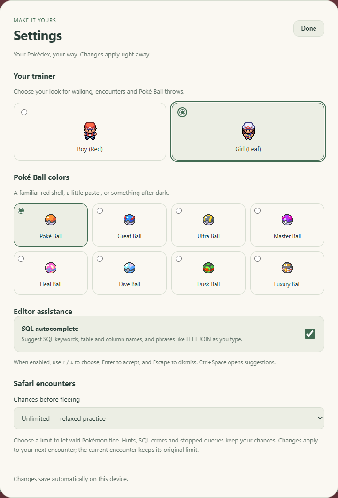
Your trainer
Boy (Red) and Girl (Leaf).
Automatic Pokédex entry reveal · random encounter levels 5–50 · November 18, 2026 · Click any image for full resolution.
Boy (Red) or Girl (Leaf), with matching walking sprites and native pitching poses. Settings apply immediately and save on the device. Captured November 19, 2026.

Boy (Red) and Girl (Leaf).
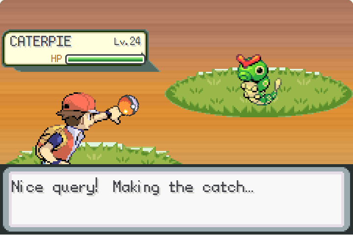
Native wind-up, release and follow-through.
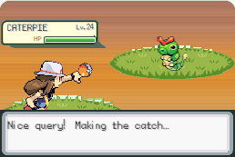
The ball releases as the arm comes forward.
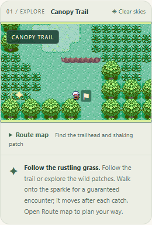
Your choice carries into walking and mystery encounters.
A themed ball throw, capture flash, landing and three shakes precede the Pokédex entry. Recorded from the rendered application.
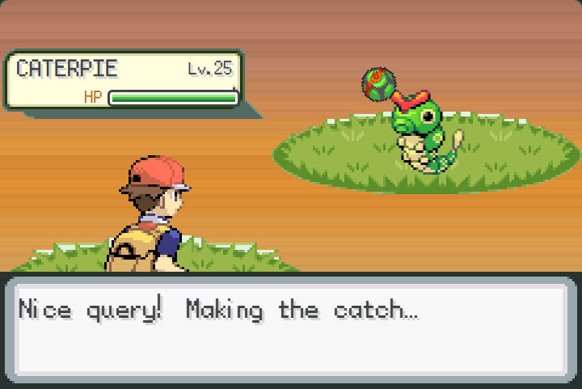
The ball matches the selected color theme.
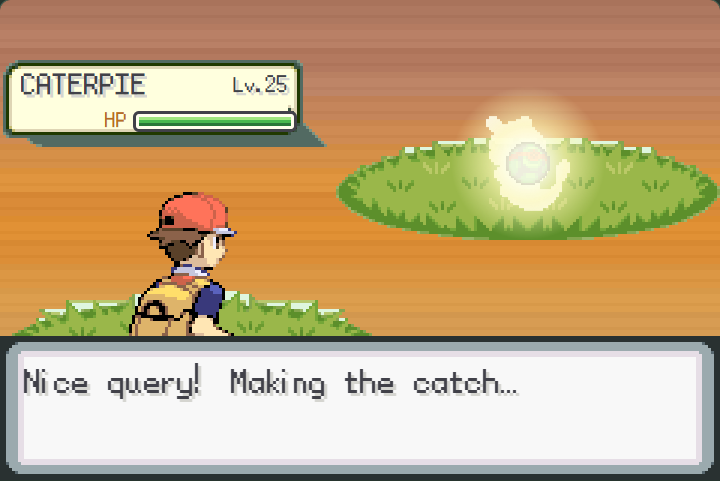
The Pokémon disappears into the ball.
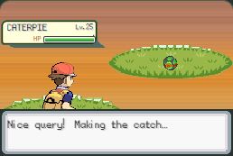
The Pokédex entry follows the animation.
The framed HP meter and introductory controls popup. WASD, arrow keys or map swipes replace the direction buttons. Earlier gallery photos below may show the previous controls.
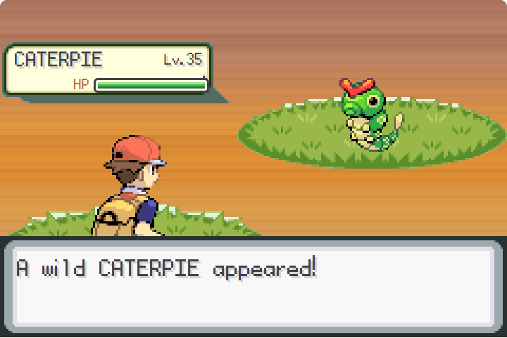
HP label and a compact track beneath the Pokémon's name.
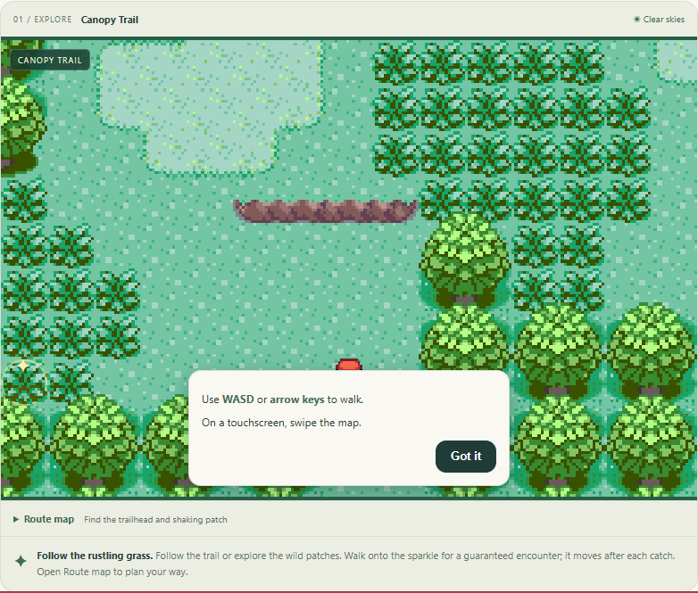
Dismiss with Got it or start walking.
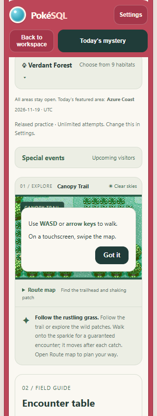
Swipe the map to walk, with no direction buttons.
Route exploration, the trainer, weather and the encounter tables.
Grass, water, sand, cave and icy encounter scenes.
The full SQL assignment, successful catch, personal Pokédex, settings and mobile layout.
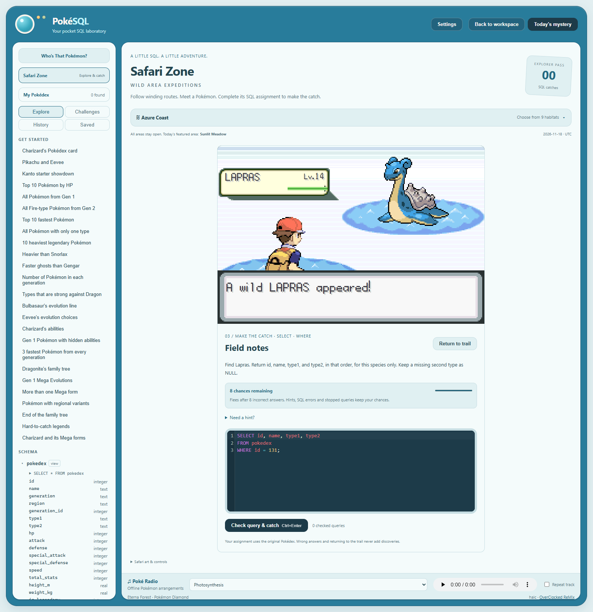
Field notes · eight chances
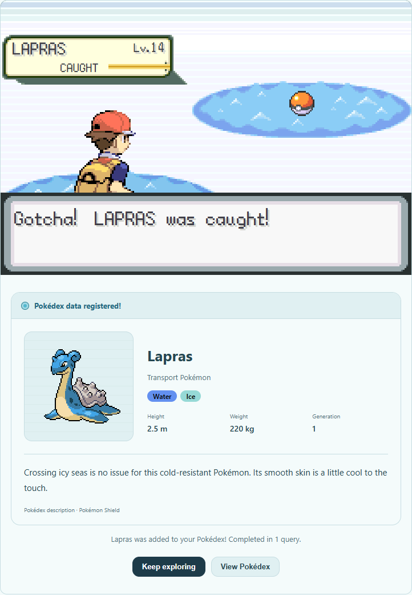
Lapras registered after the correct SQL query
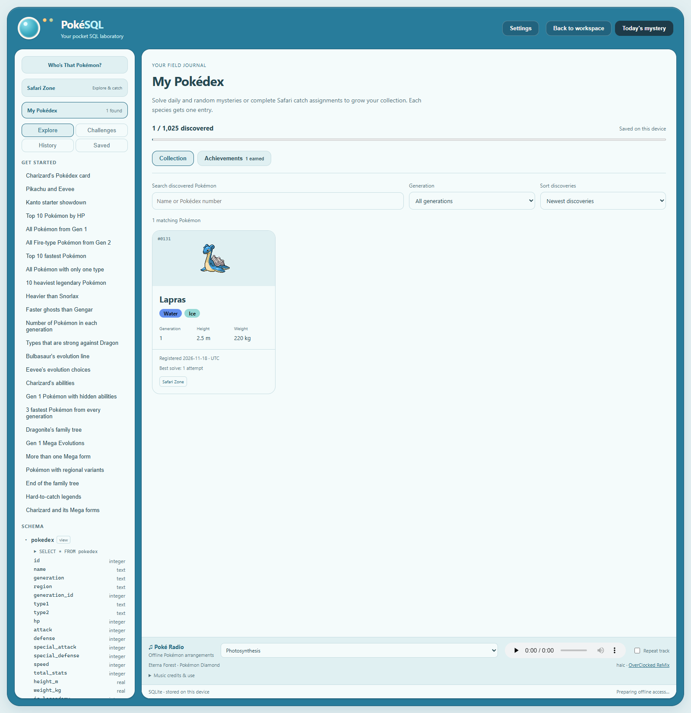
The caught Lapras in its saved journal entry
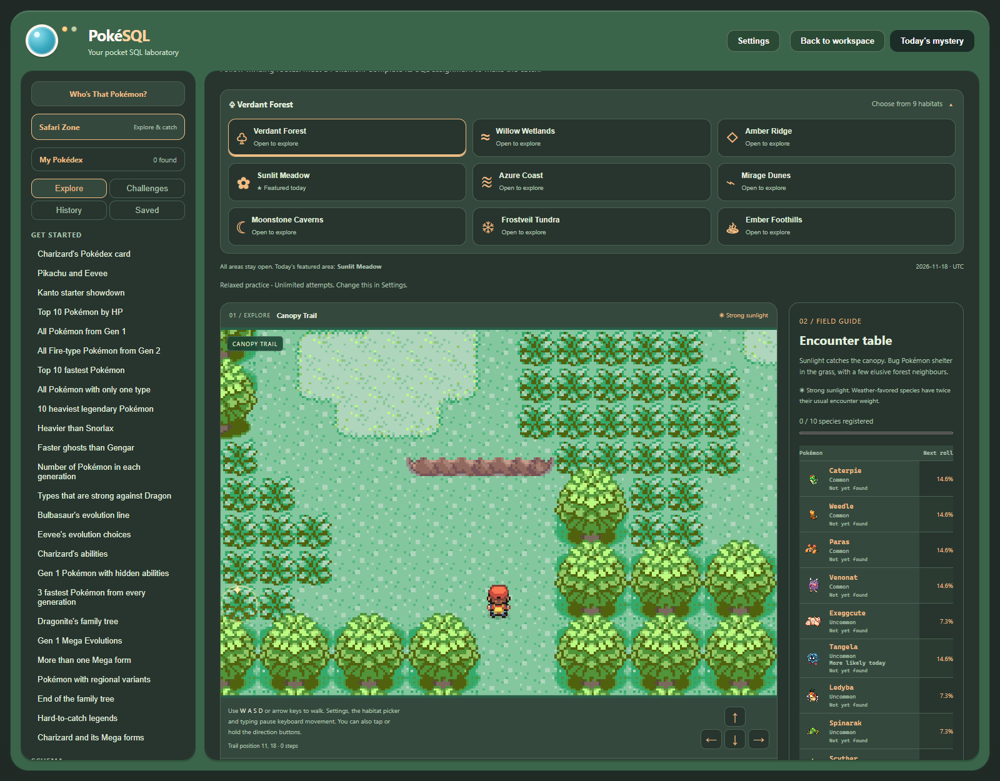
All nine areas remain open
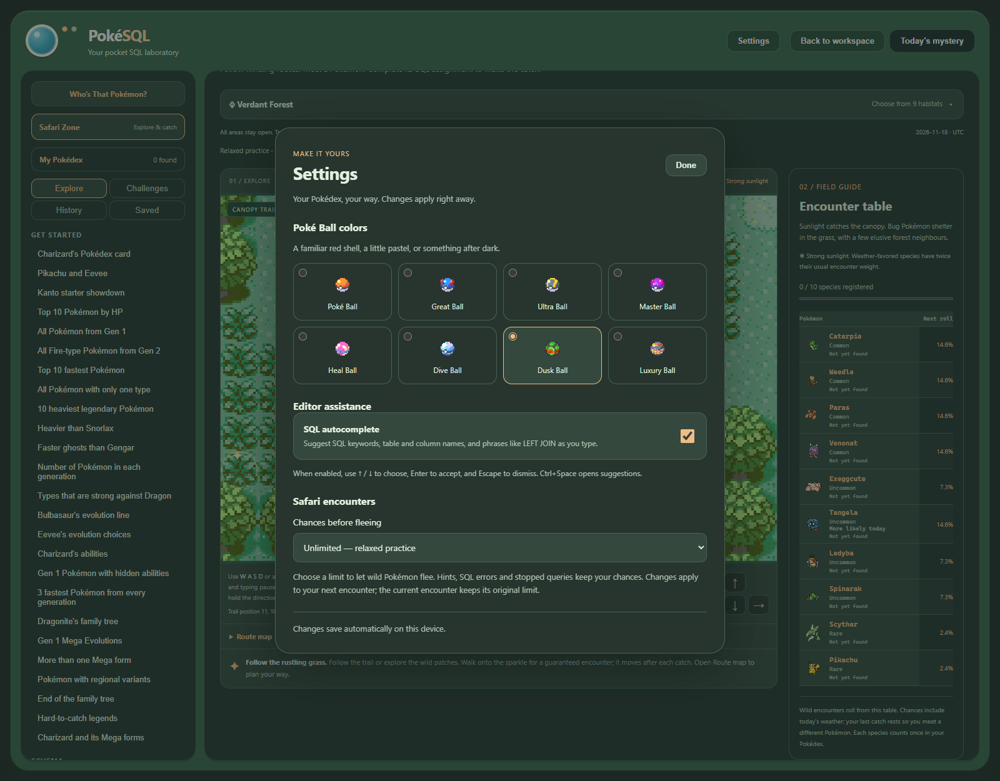
All eight Poké Ball palettes
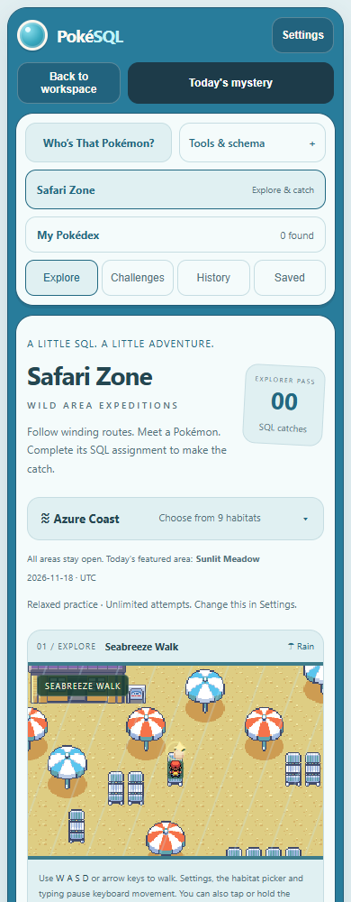
390px mobile viewport
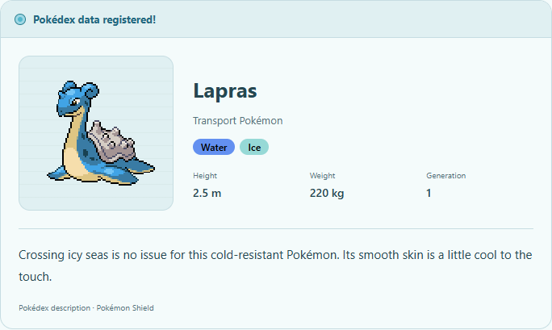
Category, types, height, weight, generation and the English game description.
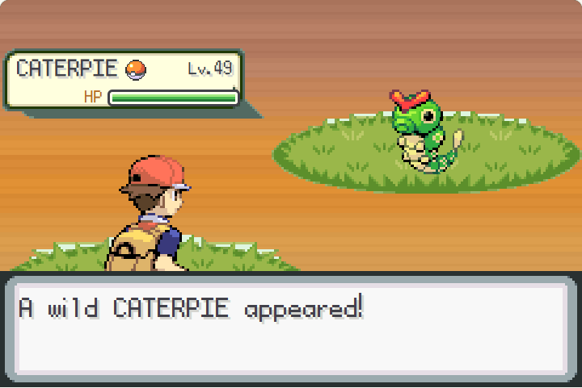
A Poké Ball beside the name marks a species already registered in the collection.
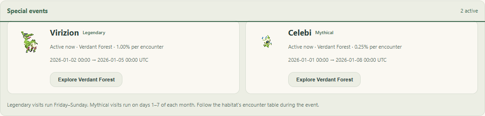
UTC windows and encounter odds. Demonstration date January 2, 2026.
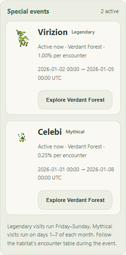
320px mobile viewport.
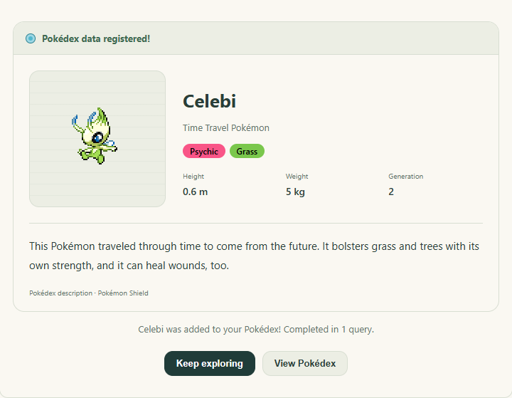
A saved encounter remains catchable after its event ends.